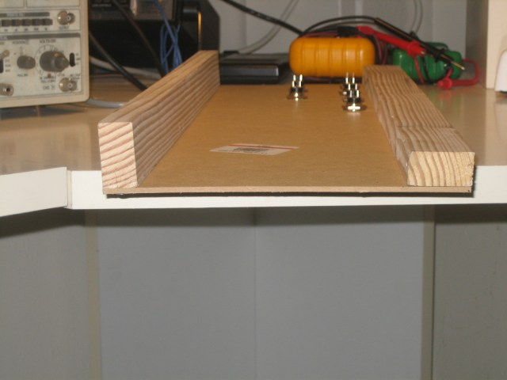
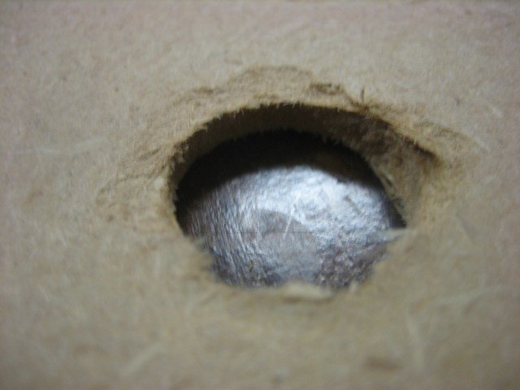
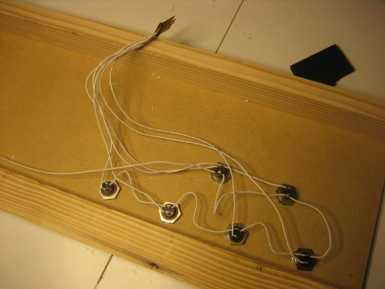
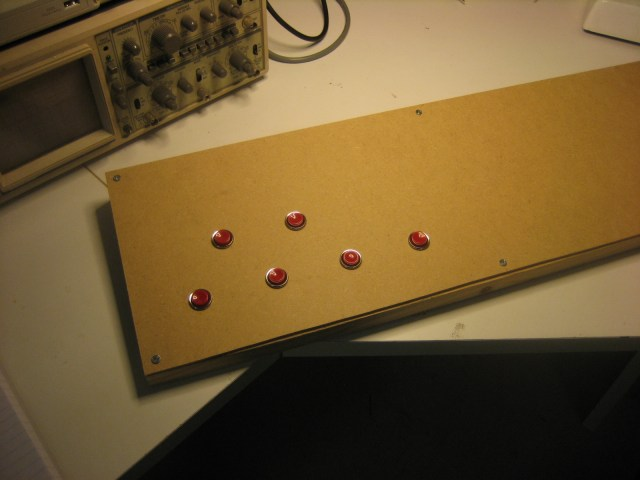

Arduino Pedal Fighter project
I’m looking into building a MIDI foot controller that works something like the MIDI Fighter but for your feet.
The idea is to use momentary arcade-style buttons just like the MIDI Fighter. There are a few problems with doing that though. One is that the arcade buttons are not very low profile. They are designed to be installed into 3/4″-1″ particleboard arcade cabinets. This makes them pretty deep to use for a foot controller. There are some lower profile versions but they seem to be kind of expensive.
I’m starting with a cheap prototype using 1/8″ MDF and furring strips. The pushbuttons are general purpose round pushbuttons that are similar to arcade buttons but smaller in diameter. I picked these up locally at HSC.
Pull up resistors
One snag that I ran into when dealing with the Firmata firmware was that by default they don’t enable the Arduino’s internal pull up resistors. The Arduino has internal 20k resistors that are use to keep the inputs from floating. If these aren’t enabled, and no external pull ups are used, the inputs will be unpredictable. I thought that the Firmata demos would enable the pull ups but the apparently don’t. To test my pedal design I used the SimpleDigitalFirmata sketch that is included with the Arduino IDE. I modified the code slightly so that pull ups would be enabled.
```
void setPinModeCallback(byte pin, int mode) { if (ISPINDIGITAL(pin)) { pinMode(PINTODIGITAL(pin), mode); // added the follwing call to digitalWrite digitalWrite(pin, HIGH); } }
``` For some documentation on digitalWrite and enabling the internal pull up resistors see this page.
Once I did this, the buttons worked without external pull ups.
Construction
I built the enclosure as cheaply as possible. Total cost of the materials was under 5USD if you don’t count the screws. I bought a 100 count box of wood screws that set me back 3.50USD but I only used 6 screws. My thinking on the enclosure is that I’m going to cut it up and experiment with different button placements before I do the final design. Using cheap materials such as particle board lets me drill holes easily and throw away entire iterations on the design without worrying too much about it.
The basic design is a flat panel supported on the front and back by wooden strips. The furring strip that I bought was 3/4″ x 1″ or so, so I decided to lay the wood down on the front and stand it up on the back to create a slightly angled panel.

I drilled out the panel using a 5/8″ wood boring bit. These are much cheaper than metal bits and other types of tungsten carbide goodness. A 5/8″ bit at Home Depot was a 17USD investment if I remember correctly. When I fabricate this in metal, I’m going to go broke buying drill bits! More seriously, drilling MDF is very quick, but it pays to go slowly since the material will chip and tear on the backside when the bit punches through. Drilling against a bit of scrap wood helps too.

Some of my holes ended up kind of messy because I got impatient after drilling a few of the holes.
I decided on a layout that should provide ample room for a normal adult-sized shoe to fit between the buttons. However the way that the top row is positioned, the foot will not fit fully between the lower row, so the user will have to use his toe. I’m still not sure about the spacing, but I’m pretty sure that I want to use an offset top row to mimic the layout of a chromatic piano keyboard. I only bought 6 buttons, but the final version should have a full octave of buttons. Or perhaps an octave plus one. The only problem with an extra button is that ganging more than one unit together is more awkward that way. Maybe that is a problem for later on.
Once I drilled the holes, I fit the push buttons into the holes and soldered up a wiring harness. The following picture shows what I ended up with:

Note that I could only find a dual row header. I should have used a single row header. Also of note – soldering to the header is very quick and easy. Don’t keep the soldering iron on the header for longer than a split second, otherwise the header pin will melt the plastic and it will get loose or fall out of the plastic carrier. This happened to me, and I’m going to have to redo the header work because of it.
A few things about this prototyping method. I made the mistake of doing the wiring using a ground bus – connecting the individual buttons to one another rather than using a star wiring configuration. In a finished design it makes sense to wire things this way to save wire and effort. However, it occurred to me that I can’t actually pull a button out of its hole because of the way I did the wiring. I’m going to have to desolder the button in order to do this. Better to put each button on its own header I guess.
The pedalboard so far looks like this:

Post-build notes
I haven’t really finished this. It is a prototype of a larger work in progress. However I can say that there are a few things I learned about developing enclosures using thin MDF. The MDF is really easy to cut and work with. It is a little bit fragile to drill, but with a little care it is fine, you just have to go slowly. However, it is not as rigid as plywood or metal. When I use normal foot force on this pedalboard it flexes noticeably. I think that this could be prevented by putting a bottom on the pedal or by putting sides/braces underneath the top panel. The current design is good enough for me to validate the design however, and that was the point of this exercise.